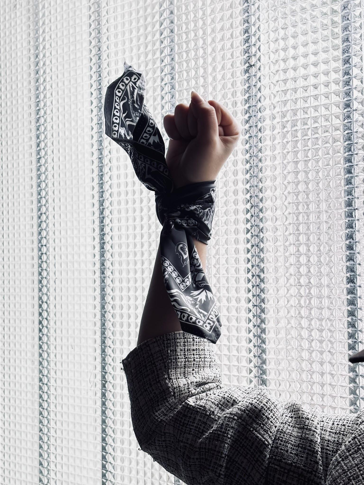
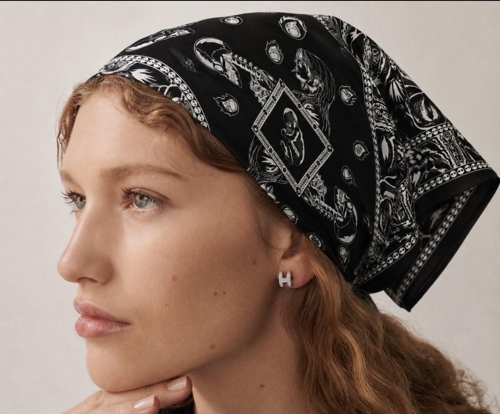

La propuesta del pañuelo
“La lucha entre: la vida y la muerte” surge de una mirada sobre las formas de resistencia que aparecen tanto en las marchas y reclamos en las calles como en el día a día. El pañuelo propone representar esa tensión constante frente a la violencia y la muerte.
La composición busca construir paralelismos visuales con el arte y con la potencia gráfica del pañuelo como soporte de manifestación.
Blanco, negro y dualidad
La elección de solo dos colores es intencional. En esta propuesta no hay grises: la imagen trabaja desde el contraste entre blanco y negro para reforzar la idea de una lucha marcada entre vida y muerte.
Esa oposición aparece como reflejo dentro del pañuelo, organizando una lectura directa, cruda y de alto impacto visual.
La base bandana
El pañuelo toma como base formal la bandana, un formato muy presente en manifestaciones y marchas. Desde esa referencia, la estampa combina bordes, símbolos repetidos y escenas enfrentadas para construir una superficie cargada de signos.
El lenguaje gráfico se apoya en el contraste, la repetición y la simetría para intensificar el sentido de confrontación y reclamo.
El centro de la composición
En el centro aparece, de forma grande y cerrada, un bebé recién nacido. Ese núcleo funciona como punto de atención y como símbolo de maternidad, cuidado y vínculo con un ser querido.
A su alrededor, las imágenes enfrentadas refuerzan la tensión del concepto: una lucha visual donde el centro reúne la vida, el cuidado y aquello que se busca proteger.
Reflexión de la actividad
El proceso también abrió una reflexión sobre el momento delicado que se atraviesa socialmente y sobre la necesidad de estar juntos para pedir justicia.
Galería del pañuelo



Propuesta realizada por Joaquin Fernando Kozlowski en el marco de Taller de Diseño III, orientación Textil, junto con el LAD (Laboratorio de Diseño).